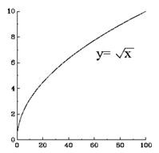

Families of Curves
HomeworkParent Graph - an anchor graph from which other graphs are derived
| $f(x)=x^2$ | $f(x)=x^3$ | $f(x)=x^4$ | $f(x)=x^5$ |
|---|---|---|---|
| $f(x)=√{x}=x^{1/2}$ | $f(x)=|x|$ | $f(x)=[x]$ | $f(x)=1/x \text" or " x^{-1}$ |
|  | =[x].gif) |
| $f(x)=x^2$ | $f(x)=x^3$ |
|---|---|
| $f(x)=x^4$ | $f(x)=x^5$ |
| $f(x)=√{x}=x^{1/2}$ | $f(x)=|x|$ |
| $f(x)=[x]$ | $f(x)=1/x \text" or " x^{-1}$ |
|
Linear Transformation
Reflection - flips graph over its axis of symmetry
Translation - slides graph vertically &/or horizontally
| $\table \html"<b class='underline'>Shift left or right</b>"; \text"+ or - to the x"; \html"<b class='underline'>Shift up or down</b>"; \text"+ or - to the y"$ |
| $\table \html"<b class='underline'>Shift left or right</b>"; \text"+ or - to the x"; \html"<b class='underline'>Shift up or down</b>"; \text"+ or - to the y"$ | |
Dilation - (aka geometric tranformation) stretch or shrink